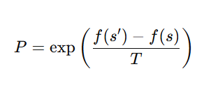

Group 4
Group Members and Roles
A quick team map of who presents, explains, designs, and supports the demo.
Three optimization strategies, one shared goal: search huge problem spaces efficiently without checking every possibility.
A quick team map of who presents, explains, designs, and supports the demo.
Lead Presenter
Opening and Closing
Concept Explainer
Definitions
Practical Illustration
Coding Demo / Slide Designer 2
Q&A Handler
Quick Check Facilitator
Slide Designer 1
Sources Compiler
Additional Presenter
Additional Presenter
We begin with a search space, an initial solution, and the question: how do we improve it efficiently?
Move greedily to the best nearby state.
Allow some worse moves while temperature is high.
Evolve many candidate solutions at once.
We end with a decision: which method fits the size, complexity, and landscape of the problem best?
Explores many possibilities exhaustively. Higher confidence, much higher cost.
Searches strategically for strong solutions fast. Lower certainty, better scalability.
Always take the best immediate uphill move, then repeat until the search cannot improve anymore.
Fast and intuitive, but limited by what the current path can see.
Pick an initial state to begin the search.
Evaluate the neighboring states around it.
Choose the best improving neighbor.
Keep climbing while the value improves.
End when no neighbor offers a better move.
Easy to explain, code, and reason about.
Works well on small or smooth search spaces.
Chooses the best visible move, which is why it can miss the global optimum.
That “bad move” is not a mistake. It is a temporary gamble that helps the algorithm escape local optima and explore somewhere better.
The method is inspired by annealing in metallurgy, where materials are heated and cooled to settle into lower-energy states.
At high temperature, particles move freely and the search explores many random directions.
Temporary disorder allows worse moves, helping the algorithm escape traps and search new regions.
A cooling schedule gradually reduces randomness, so fewer risky moves are accepted over time.
At low temperature, the system becomes stable and the algorithm focuses near stronger candidate solutions.

Genetic Algorithms borrow the logic of natural evolution: keep better candidates, combine them, mutate them, and repeat across generations.
A set of possible solutions.
A score telling how good each solution is.
Prefer stronger candidates for reproduction.
Repeat the cycle until a good stopping point.
Solutions with higher fitness are more likely to pass their traits forward.
New solutions inherit useful characteristics from parent solutions.
Random changes keep diversity alive and prevent premature convergence.
A generation is one full evolutionary cycle. More generations mean more chances to discover strong combinations.
A compact sketch of how temperature guides search from exploration to refinement.
function simulatedAnnealing(state, temperature): best = state while temperature > 0: neighbor = randomNeighbor(state) delta = score(neighbor) - score(state) if delta > 0 or random() < exp(delta / temperature): state = neighbor if score(state) > score(best): best = state temperature = temperature * coolingRate return bestBest when you need speed, simplicity, and the landscape is not too deceptive.
Best when local traps are common and some controlled randomness can help.
Best when the problem is large, complex, and benefits from parallel exploration.
Optimization is not just about finding the best answer. It is about choosing the right search behavior for the problem you face.